Circular Walk
Circular
Perched above the Thames Estuary, Thameside Nature Discovery Park offers some of the most impressive views in south Essex. With wide open landscapes, excellent wildlife spotting and miles of estuary scenery, it's a fantastic destination for a peaceful walk with your dog.
Local tip: Bring binoculars if you have them. The estuary attracts a huge variety of birds throughout the year, and the higher viewpoints offer some of the best wildlife watching opportunities in Essex.
Honest ratings, so you can decide in seconds whether it suits your dog.
How we rate this
How we rate this
How we rate this
How we rate this
How we rate this
How we rate this
How we rate this
How we rate this
See what it actually looks like before you go.

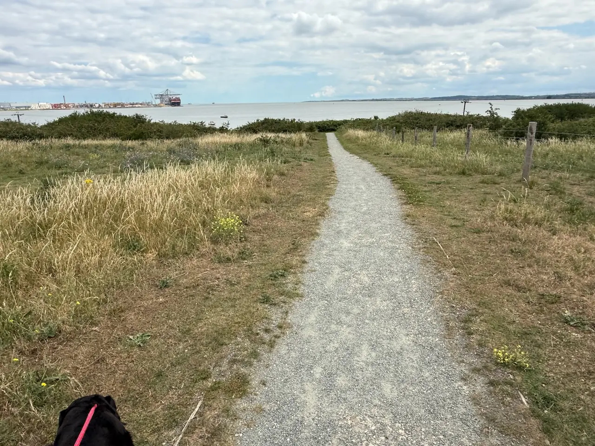
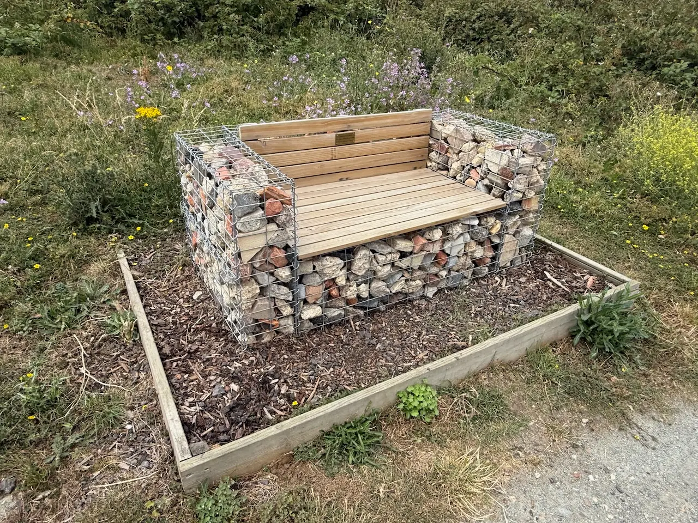
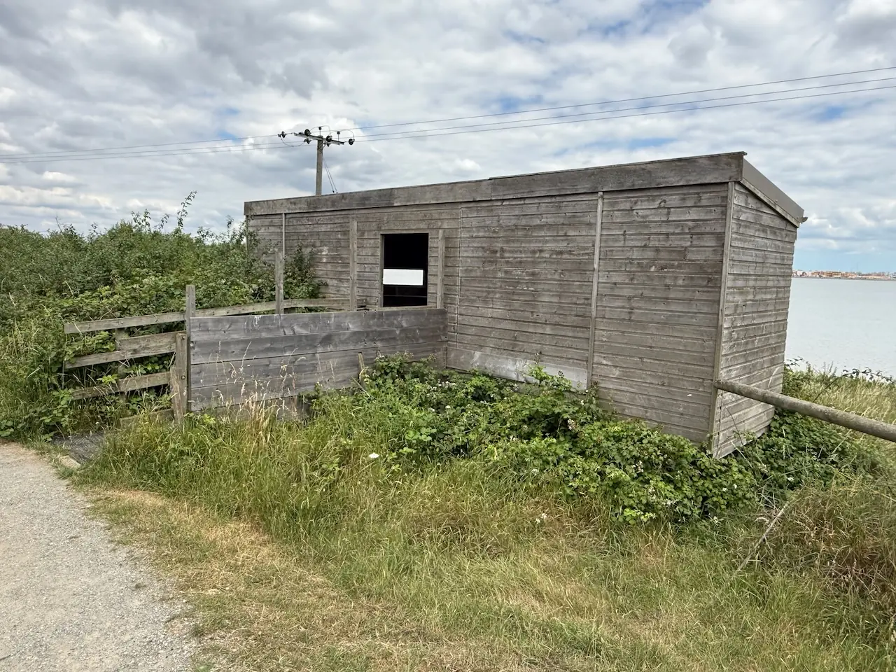
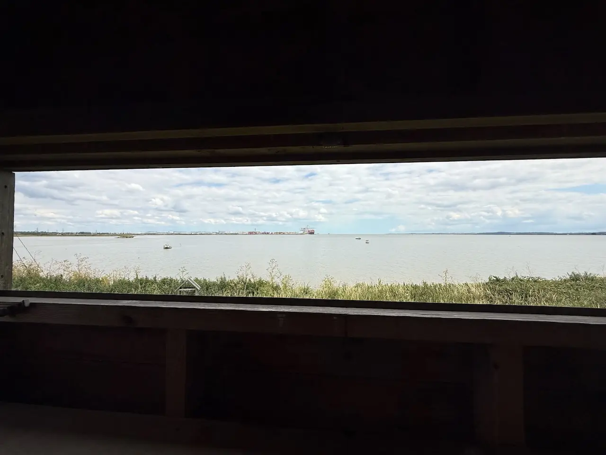
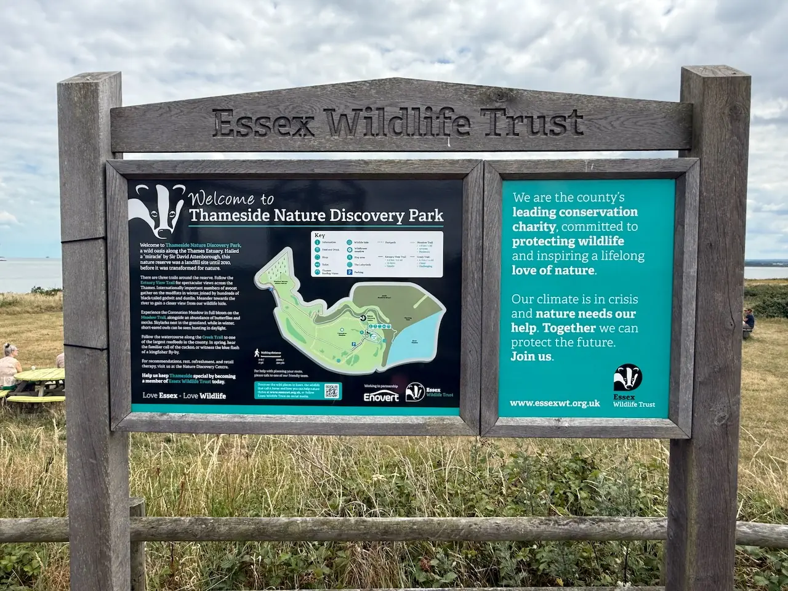
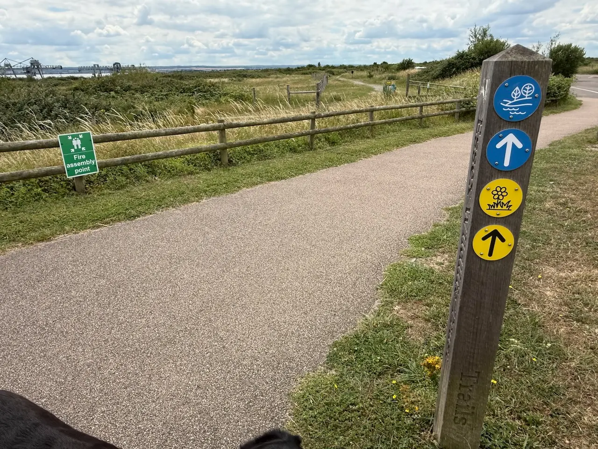
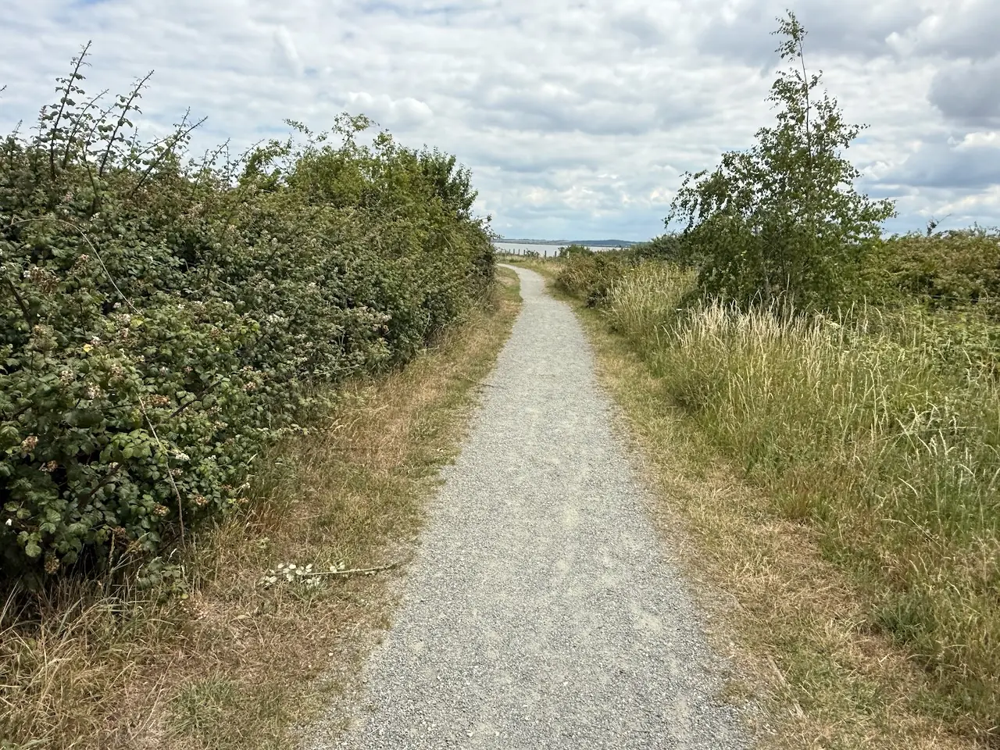
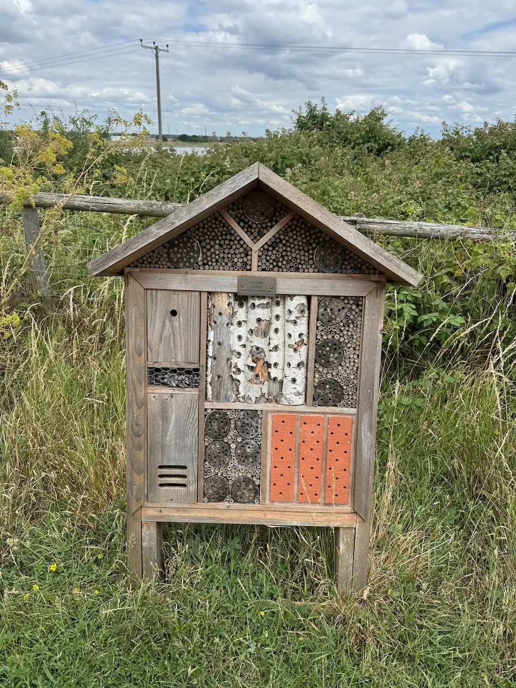
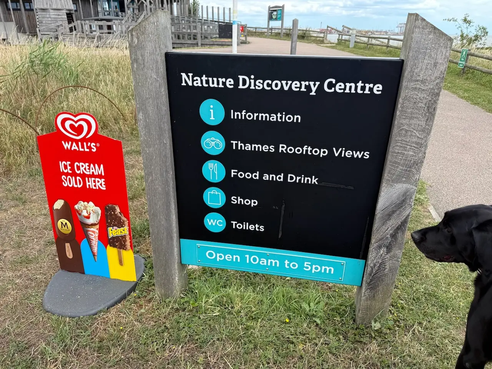
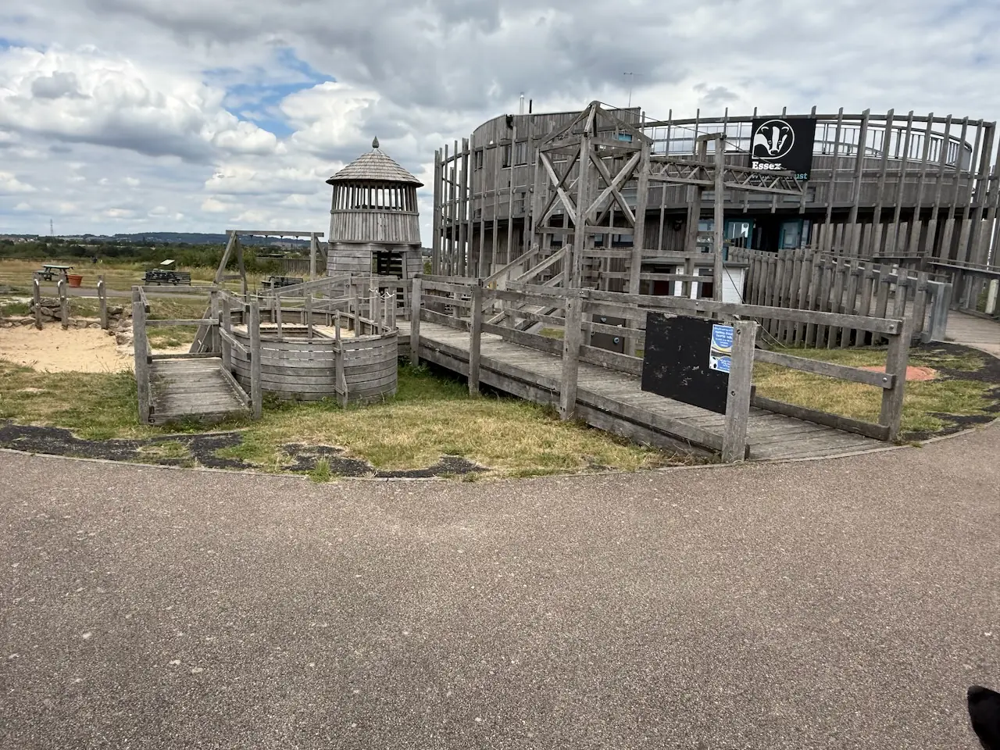
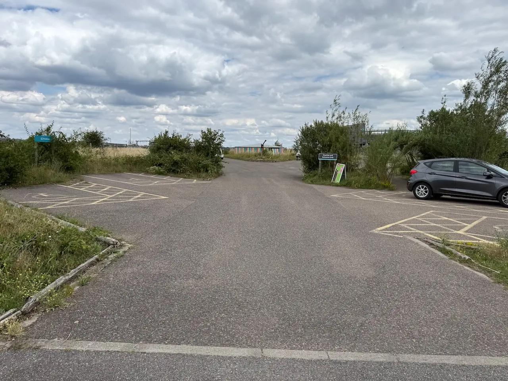
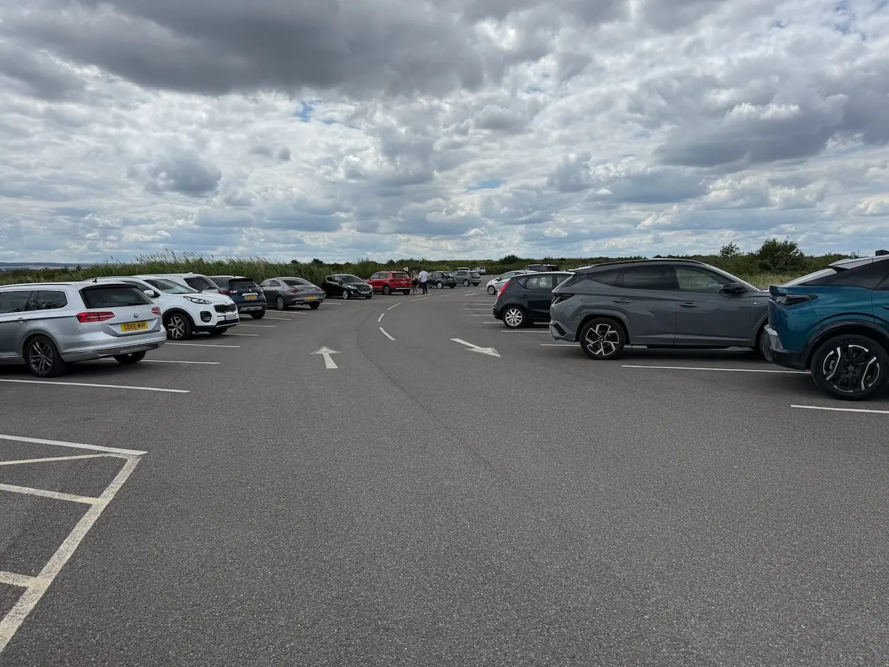
Circular
Circular
Parking & directions. The car park at the Nature Discovery Centre suggests a donation of £5 per car.
Already heading to Stanford-le-Hope? Here's what other local dog owners pair with this walk.
Other dog-friendly walks within easy reach of Thameside Nature Discovery Park.
From local dog owners who've walked it.
★ This walk doesn't have any community tips yet.
Know something that would help another dog owner?
Have you spotted something we've missed?
We'd love your help keeping Dogs of Essex accurate and up to date.
Managed by Essex Wildlife Trust.